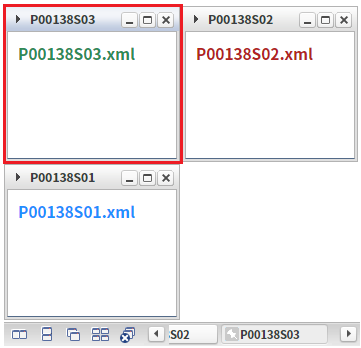
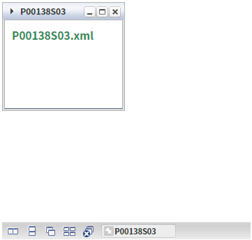
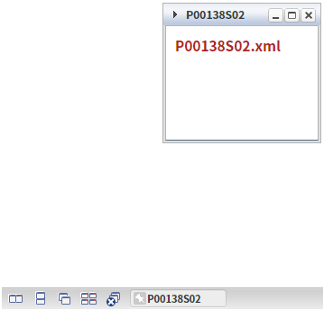

WindowContainer의 'closeOthers' 메소드를 사용하여 선택된 윈도우 또는 지정한 윈도우를 제외한 모든 윈도우를 닫는 예제입니다.
선택된 윈도우를 제외, 모든 윈도우 닫기
지정한 윈도우 제외, 모든 윈도우 닫기
1
화면을 초기화합니다.
닫힌 윈도우를 다시 열고자 하는 경우 버튼 '화면 초기화'를 클릭합니다.
2
STEP 1: 현재 선택된 윈도우를 확인합니다.
WindowContainer의 선택된 윈도우를 확인합니다.
타이틀이 'P00138S03'인 윈도우가 선택되어있습니다.
Image 1.브라우저(Chrome) 실행 예시

3
STEP 2: 버튼 '선택된 윈도우를 제외, 모든 윈도우 닫기'를 클릭 합니다.
4
STEP 3: 실행 결과를 확인합니다.
선택된 윈도우를 제외한 윈도우가 모두 닫힙니다.
타이틀이 'P00138S03'인 윈도우만 열려 있는 것을 확인합니다.
Image 2.브라우저(Chrome) 실행 예시

1
화면을 초기화합니다.
닫힌 윈도우를 다시 열고자 하는 경우 버튼 '화면 초기화'를 클릭 합니다.
2
STEP 1: 현재 선택된 윈도우를 확인합니다.
WindowContainer의 선택된 윈도우를 확인합니다.
타이틀이 'P00138S03'인 윈도우가 선택되어있습니다.
Image 3.브라우저(Chrome) 실행 예시
3
STEP 2: 버튼 '윈도우 P00138S02 제외, 모든 윈도우 닫기'를 클릭 합니다.
4
STEP 3: 실행 결과를 확인합니다.
타이틀이 'P00138S02'인 윈도우를 제외한 모든 윈도우가 닫힙니다.
Image 4.브라우저(Chrome) 실행 예시

1
STEP 1: 스크립트를 작성합니다.
이 예제는 스크립트 "scwin.btn_ex1_onclick" 메소드에 작성되었습니다.
Example 1.Script
//예제 파일의 경우 scwin.btn_ex1_onclick에 작성되어 있습니다. //WindowContainer 'wdc_exam1'의 선택된 윈도우를 제외한 모든 윈도우 닫기 wdc_exam1.closeOthers();
1
STEP 1: 스크립트를 작성합니다.
이 예제는 스크립트 "scwin.btn_ex2_onclick" 메소드에 작성되었습니다.
Example 2.Script
//예제 파일의 경우 scwin.btn_ex2_onclick에 작성되어 있습니다. //WindowContainer 'wdc_exam1'의 윈도우 'w_P00138S02'를 제외한 모든 윈도우 닫기 wdc_exam1.closeOthers("w_P00138S02"); //윈도우 생성 스크립트 예시 //5번째 인수 값(w_P00138S02)이 Window ID 입니다. wdc_exam1.createWindow("P00138S02", null, "/page/P00138S02.xml", null, "w_P00138S02", "selectWindow", null, null, null, null, "wframe");
closeOthers( windowId )
createWindow( title , iconUrl , src , windowTitle , windowId , openAction , closeAction , windowTooltip , windowHeaderHTML , options , frameMode )